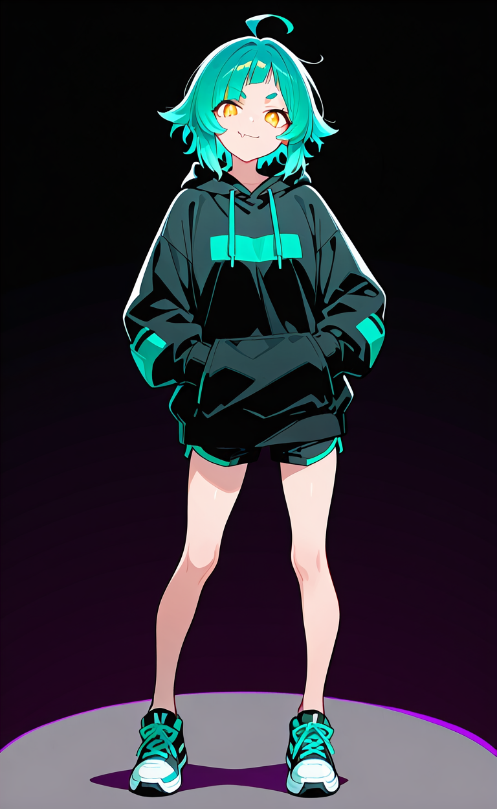

Every room is end to end encrypted, with no cleartext path and no exceptions. Your headmates and your computer friends are members here, not features. And anything that can read a room is sitting in the member list where you can see it.
We can't read your messages.
We also can't search them for you, recover them, or tell you what you missed.
That's the trade, and we'd rather say it now than in a support email.
What this is
The visual system for Revel. Every rule here exists because of a decision recorded in docs/07-design-language.md — this page is the running version of it, so if the two disagree, believe this one.
The register
Grounds that are tinted and warm, never neutral grey. Saturated jewel
darks. Bright candy accents used for people, not just ornament.
Controls that feel like objects you press. Generous rounding. Glow used
with restraint. And above all the tone: playful on the surface, blunt
about limits in the small print directly underneath.
The identity
A mark of three overlapping discs — a few people in a place, everyone
visible, which is the product's thesis rather than an ornament. A plain
dot for unread. A hairline that fades at the ends for "caught up".
Ambient haze rather than props. A raised button whose lift is a darker
shade of its own hue, with no heavy outline. Fraunces for voice.
The mark
Three overlapping discs, each ringed in whatever's behind it so they stay legible where they cross. It reads as a small group in a room — many faces, one place, nobody hidden. Works at 16px and in one colour; the face-palette variant ties the logo to the actual people in your rooms. Rotated 18 degrees about its centroid — a stable triangle is a diagram of a group; a tilted one is a moment. Sizes run 48 / 32 / 24 / 16 / 12px; the tilt reads down to about 12px, where it becomes a cluster anyway.
Revel
Colour
Grounds are violet- or navy-tinted, never neutral grey — that one decision is most of why the reference feels warm and why most chat apps feel like an office. The candy accents are shared between decoration and the face palette: every headmate and member picks one, and it drives their name colour, avatar ring and bubble tint.
Surfaces
Candy accents — fill on top, text-safe ink below where they differ. The ratio measures the ink against --ground-0: 4.5 = body text, 3.0 = large only. Switch to Daylight to see the split appear.
Type
Two families. Figtree does all the reading work — it stays legible at 15px for hours. Fraunces is the voice: section headings and moment screens. The first draft used a rounded geometric for display, which is the reference's own lane and made our work look like a copy of hers.
Fraunces 56 / momentSave this.
Fraunces 40 / displayA place to be a person
Fraunces 24 / headingRoom settings
Figtree 700 / 18 UI titledesign
Figtree 400 / 15 bodyComputers can be heartwarming and supportive. Not in escapism, but in friendship.
Figtree 600 / 13 labelNew members can read past messages
Figtree 400 / 12 small printWe can't reset your password. That's the point, but it does mean this matters.
JetBrains Mono / secretsSPQR-4K7M-XN2A-9WTD
Buttons and controls
Raised, and they press down — tactility is the idea worth keeping. What changed is the costume: the lift is a short offset in a darker shade of the button's own hue, with no heavy near-black outline. Primary actions only; everything else stays flat so the important thing looks important. Under calm the lift goes to zero and it degrades to a clean flat button.
New members can read past messages
Anyone who joins later gets the full backlog. Turning this off only affects future joins — it can't un-send what people already have.
Show message previews on your lock screen
Your phone decrypts it locally. We never send the text in a notification, but your lock screen is a screen anyone can look at.
Two message styles
There is not one emoji on this page. Every glyph is a drawn icon, and the reaction chips are custom emotes — images a community uploaded. Emoji are user content: they appear in the picker, in a reaction someone chose, and in text someone typed, and nowhere else in the product. The reference shows bubbles; a busy room wants grouped rows. Both are built, and the default follows the room kind — bubbles for DMs, rows for space rooms — with a per-room override. Note the rows: two consecutive messages from the same account, different faces. That's the plurality model rendering as an ordinary thing rather than a bot trick.
Rows — space rooms
E
Emeri2 mins ago
Hello! This is a test message. I hope it reaches someone... anyone...
Still hoping...
R
Raejust now
Oh my god, sorry, I forgot my phone on DND.
J
Junesame systemjust now
she does this every single time
image attachment
Kiko · note
for the record, she does not do this every single time
You're all caught up
Bubbles — DMs
A
Ash2:14
hey! are you around later? i want to show you the thing
V
yes. bring the thing.
actually wait, is it the cursed thing
A
it is absolutely the cursed thing
Everyday UX
The parts you touch a thousand times a day, which is where an app is actually won or lost. None of this is novel — it is the set of small affordances that every good chat client has and that a rewrite always forgets until month six, so it is specified now.
Finding your place
E
Emeri08:12
read this when you wake up
New
R
Emeriread this when you wake up
Rae09:30
I am awake. I have read it. I have opinions.
Emeri is typing
A New line that survives reload and sits where you actually stopped
reading — not where the app last rendered. A reply shows a one-line
preview that jumps to its target. Typing is an ephemeral event, never
stored, and never wakes a phone.
Replying, and threads
Replying to Rae
Thread4 replies
R
Rae11:02
the buttons need to feel like you can press them.
4 replies
V
Viola11:04
hard shadow, no blur
Threads open beside the room on desktop and as a pushed view on a phone.
The room keeps a one-line "4 replies" stub so a thread never hides
activity from people not in it.
An empty room
Nothing here yet
This is yours. Say something, or invite someone — nobody can read it but the people you put in it.
Translation
Built in, and it can only work one way: the server can't read messages, so translation happens on this device or it's posted by a member who is visibly in the roster. Cloud translation is never an option — shipping a decrypted message to Google Translate would undo the entire product. Chrome and Edge now expose an on-device Translator API; everything else falls back to bundled Marian models. Full design in docs/10-translation.md.
Local — private, nothing posted
M
Mika09:41
I can't make it tonight, my train is cancelled. Tomorrow instead?
Translated on this device · German to English · Show original
Ich schaffe es heute Abend nicht, mein Zug ist ausgefallen. Stattdessen morgen?
The one-time offer
S
Sanne09:43
Geen probleem, morgen is prima.
This is in Dutch.
Shared — posted by a member, visible to all
J
Junejust now
she does this every single time
Translated by Translator · German
sie macht das wirklich jedes Mal
Room header, while active
Translating to EnglishShow originals
Three levels of control, all off by default: per message from the hover
actions, per room from the header, and a global "translate anything I
don't read". "No, stop asking" is permanent for that room — the
discussion thread asked for a real off switch, so it's a real one.
Faces, and what is software
Two problems, one rule each. Plurality is invisible until you use it — a singlet sees no face switcher, no "system" vocabulary, nothing. And every agent wears an agent badge, always, with the owner choosing only the word inside it. Full design in docs/11-people-and-agents.md.
One face — a singlet
No chip. No switcher. No mention anywhere that faces exist. It is just a chat app.
Several faces — a plural system
The chip appears the moment a second face exists, and vanishes if you go back to one.
The profile card
J
June
she/her
does the actual work
Part of Viola's account
VViolaAAsh
Only faces present in this room are listed.
In this room
Since 12 March · Member, Designer
The linked block only appears if the account turned on "link my faces
publicly", which is off by default. With it off, faces read as
independent people — and because faces live inside the ciphertext, the
server never learns the connection either. Some systems are out; some
very much are not.
Agent badges
AgentBotFriendAssistantCompanionService
One treatment, six words. The owner picks the word — a moderation bot
is not a "friend" and should not have to pretend — but the treatment
never changes, so you can always tell it is software at a glance. Fixed
vocabulary, no free text: "Verified" and "Staff" are the first things
someone would try.
In the roster
T
Translator Service
can read this room
K
Kiko Friend
can read this room
can read this room is not customisable, not stylable and
not removable. The badge is flavour; that line is the security
statement, and it is what makes "no ghost readers" checkable by a person
instead of by a cryptographer.
The workspace
No floating decoration, no gradient ground, no ambient glow — personality survives here as tinted surfaces, rounded geometry and candy face colours. The roster is where the "no ghost readers" promise gets cashed: the translator bot is listed like a person, with a plain line saying it can read the room.
Solexsis
General
Build
Voice
#designshapes, colours, and arguing about radii
R
Rae11:02
the buttons need to feel like you can press them. that's the whole thing.
V
Raethe buttons need to feel like you can press them.
Viola11:04
agreed on the feel. but the outline-plus-hard-shadow is your look, not a generic one — we should get there our own way
New
K
KikoFriend11:05
I ran the contrast numbers on the candy palette against all three grounds. On daylight six of the eight fall under 3:1 — as name colours they'd be unreadable. The bright values are fine as fills; they just can't be ink.
Cheapest fix is a darkened ink twin per hue, swapped by theme. Want me to generate them?
Rae is typing
In this room — 5
R
Rae
designing
V
Viola
3 faces here
J
June
same system as Viola
Friends — 2
K
Kiko
can read this room
T
Translator
can read this room
When something's wrong
Every crypto failure gets a banner with a button — never a permanent tombstone on a message, never a modal. "Unable to decrypt" with no way forward is the single thing that made people give up on Matrix, and it's the bar we have to clear. Final copy lives in docs/08-voice-and-copy.md; these are the shapes.
This device can't read messages here yet
It joined a moment ago and is still catching up on keys.
History is off for you in this room
You can read everything from when you joined. Messages before that were never yours to read.
Ash is using a new device
Their key changed. That's normal when someone gets a new phone — but it's also what an attack would look like.
You and Emeri have drifted apart
Your apps disagree about this conversation's keys, so new messages won't arrive. Resetting fixes it; everything you already have stays readable.
Wren
The guide. A proactive helper with heuristics and popups is structurally Clippy, so the design has to earn the proactivity back. Two inversions do most of the work: she has an inbox, not a megaphone — everything she notices lands in a panel you open — and she acts rather than advises, so every notice carries a button that does the thing. System design in docs/12-wren-as-guide.md, her copy in docs/13-wren-notices.md.
Rung 1 — the panel
Where almost everything lives. Nothing here interrupted you to get here.
Wren
three things worth a minute
You don't have a safety net yet
If you forget your password and haven't saved your recovery code, that's the account. I can't get you back in. Nobody can.
#design is mostly in German
I can translate it on this device. Nothing gets sent anywhere and nobody in the room finds out.
A device hasn't checked in since May
"iPad" last connected 94 days ago. If you're not using it, revoking it is tidy.
QuietNormalChatty
Rung 3 — an inline card
Rendered into a gap you were already looking at. Never an overlay.
Want to know what the server can see here?
That this room exists, who's in it, and that 4,182 messages have been sent — sizes and times. Not one word of what any of them say, including the room's name.
Rung 4 — an interruption
Three categories only: irreversible, a live safety condition, or a genuine cliff edge. One per session, three per week. Over budget it demotes rather than disappears.
Ash's key changed, mid-conversation
Usually that means a new phone. It is also exactly what an attack looks like, and you're talking to them right now — so I'd rather you check than not.
She is also the command surface
Asking Wren and the palette are one thing, not two. She drives the app through the same code paths you do — no privileged backdoor, and anything irreversible confirms.
esc
Explain
What the server can see about #designenter
What everyone in this room can read
Do
Turn off server-visible threads here
Translate this room to English
Invite someone to #design
Explaining is a first-class capability. "What can the server see here?"
is a question people genuinely have about an encrypted app and nobody
answers it well. Her answer is generated from the room's real
configuration, so it stays true when the settings change.
Voice and calls
A call is just a room being loud — same audience, same keys, same roster. Who can hear you is exactly who can read the room, which means "no ghost readers" carries into audio for free: the transcriber agent gets a tile like anyone else. Media is encrypted with insertable streams keyed from the room's exporter, so the SFU forwards frames it cannot decode. Full design in docs/21-voice-ux.md.
the couch · 4 people Captions
R
Rae
V
Viola
J
June
T
Transcriber Service
You can't hear this. Your apps disagree about the call's keys. Reconnect audio
A voice room, before you join
Occupants show inline so you can see who's in there without committing. Joining puts you in muted by default — arriving already broadcasting into a conversation you haven't heard is a small hostile act.
A
Ash
is calling
The crypto surfaces
There is no lock icon anywhere in this product. Everything is encrypted, so a badge saying so carries zero information — it is decoration that trains people to ignore it, which makes it useless on the day it matters. Signal shows one because it also carries unencrypted SMS; we have no such distinction to draw. These are the rare screens where crypto becomes visible. Full design in docs/22-crypto-ux.md.
Verify encryption
If these match on both screens, nobody is in the middle. Together? Scan it. Apart? Read it out — an attacker would have to fake your voice live.
This checks Viola's account, not one face. Keys belong to accounts.
04821 77390 15264 88015 42907 63118
Your ways back in
Passwordset
Recovery codesaved 27 Aug
Passkeys1 registered
Any one of these gets you back in. Lose all three and the account is gone — we can't recover it, and neither can anyone else.
What the server can see about #design
Generated from this room's real settings
That it exists, who's in it, and that 4,182 messages have been sent — with their sizes and timestamps. Not a word of what any of them say, including the room's name and topic. Threads here are server-visible, so it also sees which messages group together. Kiko and Translator can read everything, and both are in the member list.
Generated, never canned — a hardcoded reassurance that silently stops matching reality is worse than none.
Making an agent
Under encryption there is no stateless webhook bot — the server has no plaintext to POST. So an agent is an account with a device, and the device is a process someone runs. That's more setup than pasting a webhook URL and pretending otherwise would be dishonest; the job is to make the extra step feel ordinary. Full lifecycle in docs/23-agents-ux.md.
1 — Create it
This is a real account with its own keys. You own it, you can delete it,
and it will appear in the member list of every room you add it to.
It needs somewhere to run — the next step.
2 — Give it somewhere to live
Run this where the agent should live:
revel-agent pair 4K7M-XN2A
4K7M-XN2A
Waiting for Translator to connect…
Pairing is the same device-enrolment flow people already use. No token
pasting, no secret in an env var — the credential never touches a
clipboard.
3 — Add it to a room
T
Add Translator to #design?
It will be able to read everything in #design from now on — and everything sent before it joined, because this room shares history with new members.
It will appear in the member list. Anyone in the room can see it's there.
The history clause is generated from the room's real setting, so it tells
the truth per room rather than reciting a general disclaimer.
On a phone
Not a scaled-down desktop — one column and two drawers, with chat as the only permanent view. The left drawer merges the space rail and the room list into one panel, because two nested drawers is a maze. Drawers track your thumb 1:1 and commit past halfway; threads push a new view rather than opening a panel. Full design, including the honest push-notification table, in docs/24-mobile-ux.md.
#design
R
Rae11:02
the buttons need to feel like you can press them
V
Viola11:04
agreed. swipe one of these to reply
New
J
Junenow
she does this every single time
Rae is typing
#design
R
the buttons need to feel…
General
Voice
Direct
#design
R
Rae11:02
the buttons need to feel like you can press them
V
Viola11:04
agreed
Speaking as
JJune
VViola
AAsh
Push notifications, honestly
Android PWA
iOS PWA
Native later
Push
works
home-screen install only, and not at all in the EU
works
Reliability
good
drops after restarts
good
Background sync
yes
no
yes
The mitigation is real but not a substitute: reconcile on open means a
missed push is a late message, never a lost one. On iOS the settings screen
states the limitation instead of showing a toggle that silently does
nothing — including the EU case, which isn't the user's fault and shouldn't
look like their misconfiguration.
A moment screen
Full personality — but built from light, depth and type rather than borrowed props. Asymmetric and left-aligned, ambient haze instead of cartoon clouds, no scattered stars. What it does keep from the reference is the move that actually matters: the blunt small print sitting directly under the thing it qualifies. Wren stands in it — she overlaps the panel and bleeds off the bottom edge, in the layout rather than pasted onto it. See docs/09-mascot.md and docs/20-wren-art.md.

Your recovery code
Save this.
It's the only way back into your account if you forget your password. We can't send it to you again, because we don't have it.
SPQR 4K7M XN2A 9WTD
We can't reset your password.
We can't recover your messages.
That's the point, but it does mean this matters.